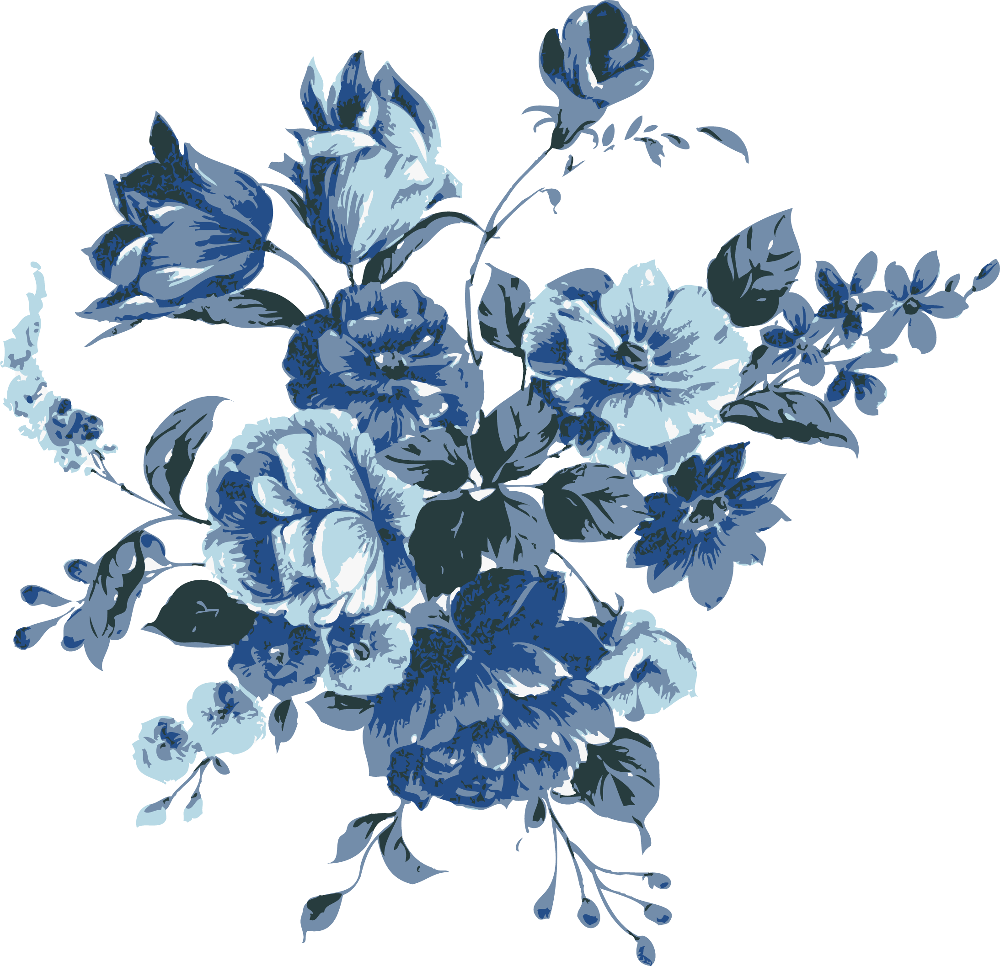
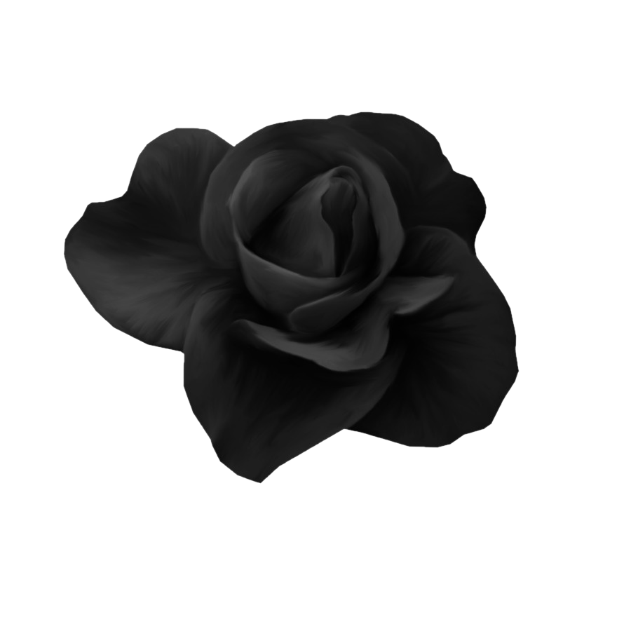

Добрый вечер, меня зовут Анастасия Шипуль
Я занимаюсь дизайном
и профессиональной иллюстрацией
Закончила художественную школу г. Бреста
Сейчас учусь в универстете и обучаю других рисованию и анимации

Обо мне
В своих работах я стараюсь показать красоту момента, мерцающее отражение света.
Я хочу, чтобы мое творчество вызвало у зрителей положительные чувства.
Краски и карандаши стали проводником моих мыслей к зрительскому разуму.
Благодаря настоящему вдохновению, которое я черпаю из музыки и природы,
мои работы выглядят так живо и понятно каждому человеку.
Годы практики и чтение художественных книг помогли мне в развитии.
Живопись, как музыка, в ней есть свои тона, цвета, акценты и настроения.
